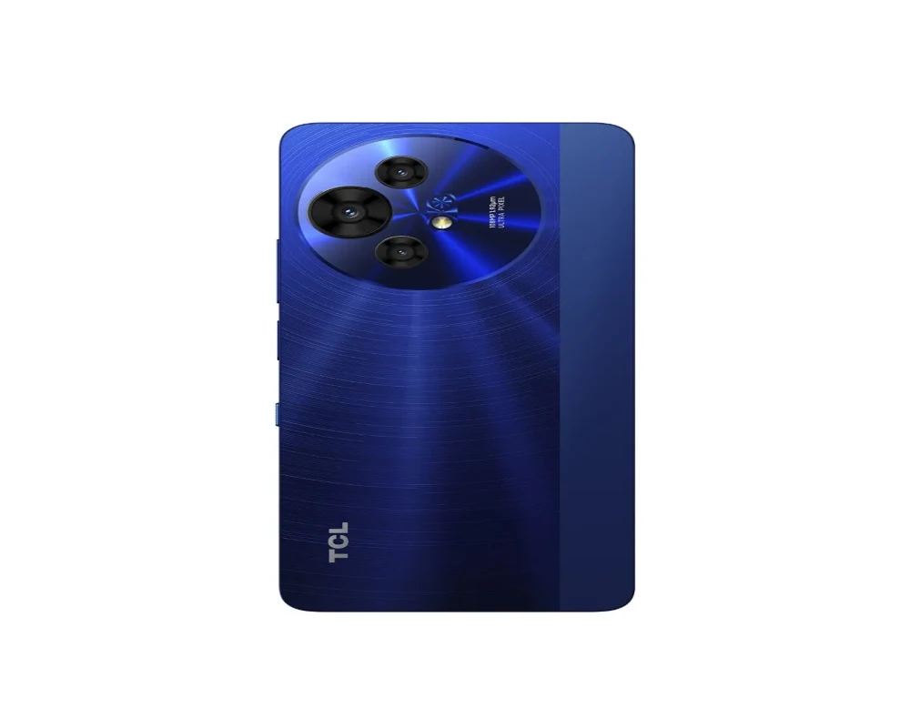

TCL 50 Pro NX
El TCL 50 Pro NX es un dispositivo móvil que cuenta con varias características destacadas.
- Pantalla: La pantalla del TCL 50 Pro NX tiene una tecnología IPS, con un tamaño de 6.8 pulgadas y una resolución de 1080 x 2460 píxeles.
- Procesador: El procesador del TCL 50 Pro NX es un MediaTek Dimensity 6300, con una velocidad de 2.4 GHz y 8 núcleos.
- Memoria RAM: La memoria RAM del dispositivo es de 8 GB, con una velocidad de 2133 MHz.
- Almacenamiento: El almacenamiento interno del TCL 50 Pro NX es de 512 GB, con la posibilidad de expandirlo mediante una tarjeta microSD.
- Cámara: La cámara principal del dispositivo es una cámara triple, con un sensor principal de 108 MP, una cámara ultrapanorámica de 8 MP y una cámara macro de 2 MP.
- Batería: La batería del TCL 50 Pro NX tiene una capacidad de 5010 mAh, con soporte para carga rápida de 33 W.
- Sistema Operativo: El sistema operativo del dispositivo es Android 14.
- Conectividad: El TCL 50 Pro NX cuenta con conectividad 5G, Wi-Fi, Bluetooth y GPS.
- Diseño: El dispositivo tiene un diseño elegante, con un peso de 196 g y un grosor de 8 mm.
- Otros: El TCL 50 Pro NX también cuenta con otros features como un lector de huellas laterales, parlantes estéreo con sonido DTS y una pantalla capacitiva multitáctil.
$500